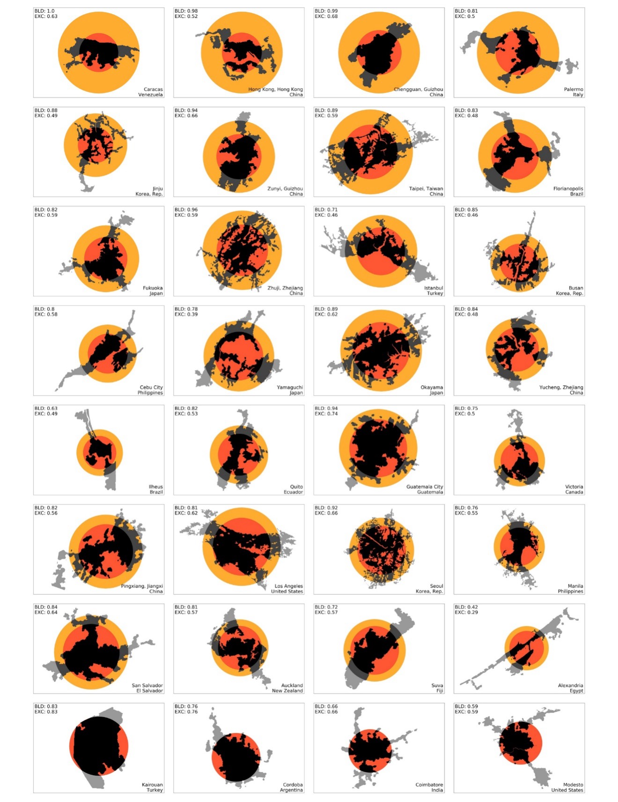
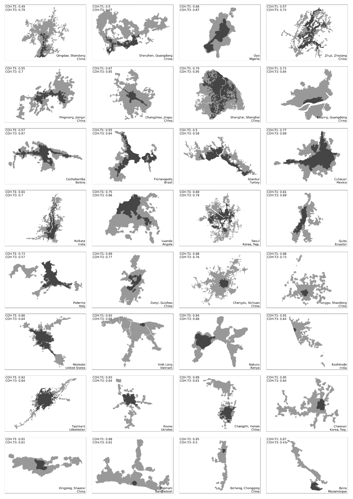
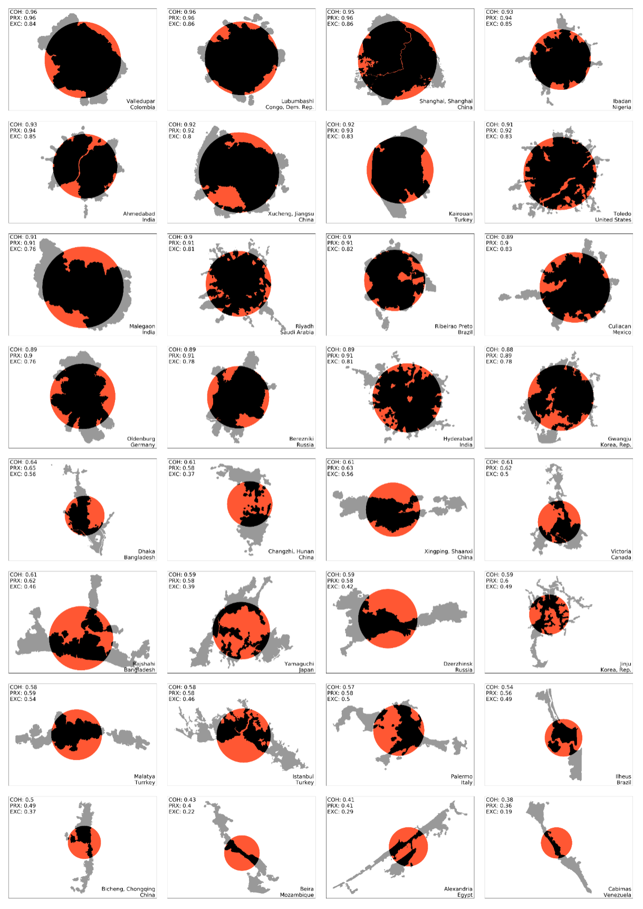
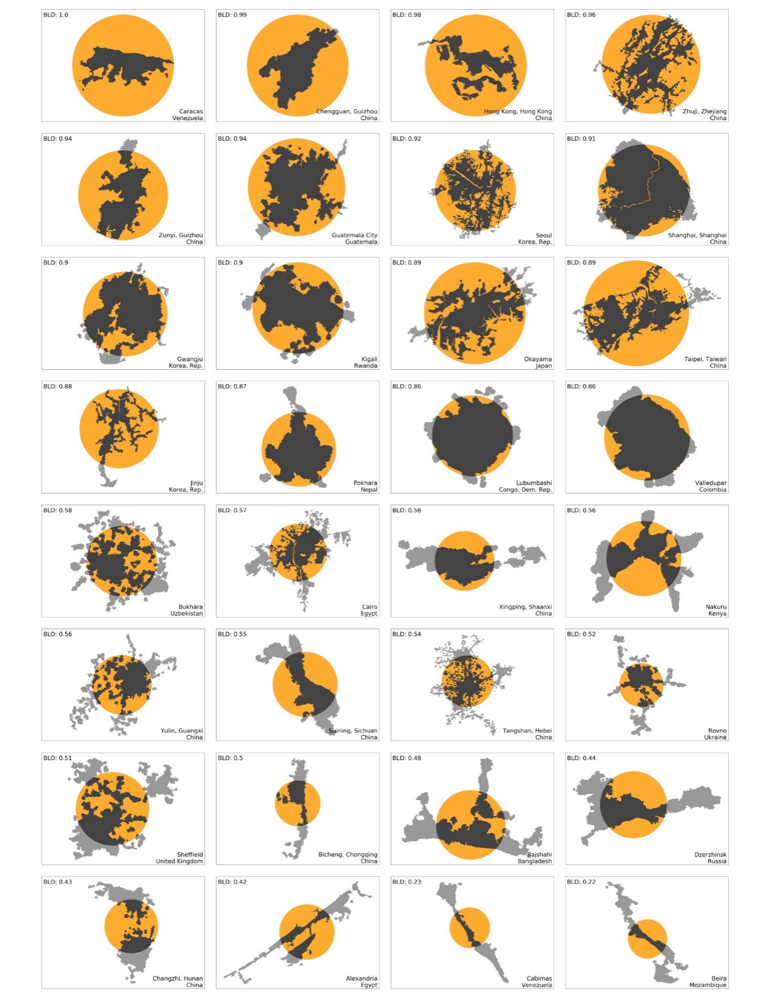

Urban population density has featured in a large body of literature on the Compact City paradigm as the key compactness attribute of cities, yet the shape compactness of urban footprints has hardly deserved a mention. This paper seeks to correct that. Both population density and shape compactness help determine the average travel distances in cities, and hence affect their energy consumption and their greenhouse gas emissions. They also affect the length of infrastructure lines and the length of commutes. We review the literature on the Compact City Paradigm with a special focus on the relationship between urban form and climate change, and focus on twelve physical attributes of cities that make them more or less compact. We define a set of metrics for measuring shape compactness, then use them to measure urban footprints obtained from satellite imagery in a stratified global sample of 200 cities across three time periods: 1990, 2000, and 2014.
La densidad poblacional urbana ha sido central en la literatura sobre la Ciudad Compacta, pero la compacidad de forma de las huellas urbanas apenas se ha mencionado. Este artículo busca corregir eso. Tanto la densidad como la compacidad de forma determinan las distancias promedio de viaje en las ciudades, afectando su consumo energético y emisiones de gases de efecto invernadero. Definimos métricas de compacidad de forma y las usamos para medir huellas urbanas de imágenes satelitales en una muestra global estratificada de 200 ciudades en tres periodos: 1990, 2000 y 2014.
The shape compactness of urban footprints worldwide is independent of city size, area, density, and income. It is strongly affected by topography. Shape compactness has declined overall between 1990 and 2014. There are strong forces that push urban footprints to become more compact (circular) and powerful forces that push them to become less compact over time. Increasing either shape compactness or population density can contribute to mitigating climate change.
La compacidad de forma de las huellas urbanas a nivel mundial es independiente del tamaño, área, densidad e ingreso de las ciudades. Está fuertemente afectada por la topografía. La compacidad de forma ha disminuido entre 1990 y 2014. Existen fuerzas que empujan las huellas urbanas a ser más compactas (circulares) y fuerzas que las empujan a serlo menos. Aumentar la compacidad de forma o la densidad poblacional puede contribuir a mitigar el cambio climático.




Angel, S., Arango Franco, S., Liu, Y., & Blei, A. M. (2020). The shape compactness of urban footprints. Progress in Planning, 139, 100429. DOI ↗ Marron Institute ↗
Funded by UN-Habitat, the Lincoln Institute of Land Policy, and the Marron Institute of Urban Management at NYU. Financiado por ONU-Habitat, el Lincoln Institute of Land Policy y el Marron Institute of Urban Management de NYU.